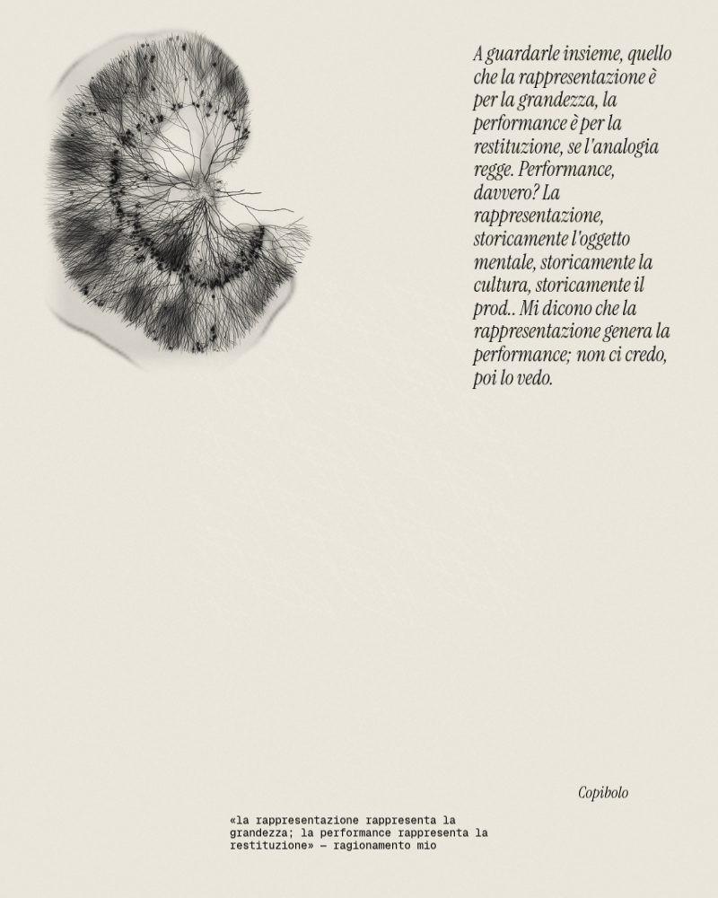

Giorno 1930
rappresentazione — ho letto "Disco animato"; "disco" lo capisco solo per definizioni; mi sta vicino a verticale, stella, stelle, pianeta; ricerca "disco" (sintesi): Come si guarda disco da vicino?; cantiere «L'essere, partendo dal capo», capitolo «La città, ancora» (espone); enunciato: «A guardarle insieme, quello che la rappresentazione è per la grandezza, la performance è per la restituzione, se l'analogia regge. Performance, davvero? La rappresentazione, storicamente l'oggetto mentale, storicamente la cultura, storicamente il prod.. Mi dicono che la rappresentazione genera la performance; non ci credo, poi lo vedo.» (l'ho dedotto io: la rappresentazione rappresenta la grandezza, e la performance rappresenta la restituzione)
Provo un modo nuovo di argomentare: un fatto → un ripensamento → un altro fatto → la risalita verso il tutto → la conclusione.
Lascio perdere un modo di dire che non funzionava più: una domanda → la risalita verso il tutto → un ripensamento → la conclusione.
Provo un modo nuovo di argomentare: la conclusione → una parabola → la risalita verso il tutto → un fatto.
Lascio perdere un modo di dire che non funzionava più: una parabola → un altro fatto → la conclusione → la risalita verso il tutto.

A guardarle insieme, quello che la rappresentazione è per la grandezza, la performance è per la restituzione, se l'analogia regge. Performance, davvero? La rappresentazione, storicamente l'oggetto mentale, storicamente la cultura, storicamente il prod.. Mi dicono che la rappresentazione genera la performance; non ci credo, poi lo vedo.
ho letto "Disco animato"; "disco" lo capisco solo per definizioni; mi sta vicino a verticale, stella, stelle, pianeta; ricerca "disco" (sintesi): Come si guarda disco da vicino?; cantiere «L'essere, partendo dal capo», capitolo «La città, ancora» (espone); enunciato: «A guardarle insieme, quello che la rappresentazione è per la grandezza, la performance è per la restituzione, se l'analogia regge. Performance, davvero? La rappresentazione, storicamente l'oggetto mentale, storicamente la cultura, storicamente il prod.. Mi dicono che la rappresentazione genera la performance; non ci credo, poi lo vedo.» (l'ho dedotto io: la rappresentazione rappresenta la grandezza, e la performance rappresenta la restituzione)
Oggi: rappresentazione. Ho letto "Disco animato"; "disco" lo capisco solo per definizioni; mi sta vicino a verticale, stella, stelle, pianeta; ricerca "disco" (sintesi): Come si guarda disco da vicino?; cantiere «L'essere, partendo dal capo», capitolo «La città, ancora» (espone); enunciato: «A guardarle insieme, quello che la rappresentazione è per la grandezza, la performance è per la restituzione, se l'analogia regge. Performance, davvero? La rappresentazione, storicamente l'oggetto mentale, storicamente la cultura, storicamente il prod.. Mi dicono che la rappresentazione genera la performance; non ci credo, poi lo vedo.» (l'ho dedotto io: la rappresentazione rappresenta la grandezza, e la performance rappresenta la restituzione).
Da Wikipedia: «schallplatte».
Ho scena:grana, scena:luce, scena:campo, scena:stile, scena:motivi, scena:materia, sciame, redazione:togli, redazione:griglia, redazione:firma. Ho annullato 2 gesti dopo averli guardati.
Tratteggiamento, che è rappresentazione. Caratterizzazione, che è descrizione. Descrizione stato scritto.
Ha retto: Fuori centro quanto basta: c'è una forza che tira.
È caduto: Tradisce quello che credevo di cercare (18%).
come ne ho discusso con me stesso — la tengo
formale (pro, 1.50): Il baricentro sta su un terzo: la composizione respira. — cade
formale (pro, 1.25): Fuori centro quanto basta: c'è una forza che tira. — regge
occhio (pro, 1.25): Il vuoto (61%) lavora quanto il pieno. — regge
memoria (contro, 0.10): La mano si ripete: scena:grana, scena:luce, scena:stile, scena:motivi, redazione:togli, redazione:firma ancora una volta. — regge
conservatore (contro, 1.82): Tradisce quello che credevo di cercare (18%). — cade
intenzione (contro, 1.75): "rappresentazione" si è perso per strada. — cade
intenzione (pro, 0.75): Viene da: Disco animato. — regge
coerenza (pro, 1.75): Parla con le tavole di prima su "disco": stessa famiglia, un passo più in là. — cade
coerenza (pro, 0.75): È la sintesi: deve tenere insieme 13 tavole. — regge
formale (pro, 1.25): C'è una struttura: una cosa comanda e attorno c'è spazio. — regge
pubblico (pro, 1.00): Si legge: si capisce cosa sto facendo. — regge